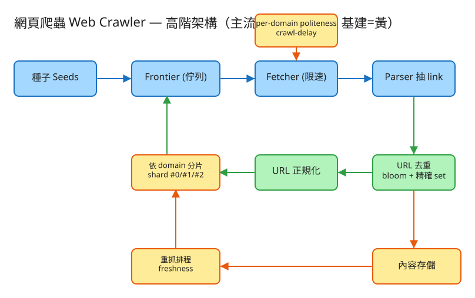

L 圖/演算法 建議 48 分鐘 Design a Web Crawler
| 指標 | 假設 | 推算 |
|---|---|---|
| 目標頁數 | 10 億頁，1 個月爬完 | 10⁹ / (30×86400) ≈ ~400 頁/秒（峰值 ×3 ≈ 1200） |
| 頻寬 | 每頁平均 100 KB | 400 × 100KB ≈ 40 MB/s ≈ 320 Mbps 下載 |
| 內容儲存 | 每頁壓縮後 ~30 KB | 10⁹ × 30KB ≈ 30 TB（單輪） |
| URL 去重結構 | 10 億 URL，精確 set 每筆 ~64 B | ≈ 64 GB（放不下單機）→ bloom：1% 偽陽性僅需 ~1.2 GB |
| Frontier 規模 | 外連分支因子 ~10 | frontier 可瞬間爆量 → 需可溢寫到磁碟/分散式佇列 |
| 重抓頻率 | 新聞頁每天、靜態頁每月 | 依頁面變更率分層排程，攤平重抓流量 |
爬蟲多半是內部批次/常駐系統而非對外 API，介面以「元件間契約」為主：
# 提交種子 / 控制（管理面）
POST /crawler/seeds Body: { "urls": ["https://a.com"], "max_depth": 5 }
POST /crawler/jobs/{id}/pause | resume
GET /crawler/stats → { fetched, frontier_size, dedup_size, qps, per_domain }
# 內部元件契約（概念）
Frontier.enqueue(url, priority) # 加入待爬（依優先序/分片）
Frontier.dequeue() -> url # 取出下一個可抓的 url（已過 politeness 檢查）
Dedup.seen(url) -> bool # bloom 先擋，命中再查精確集合
Fetcher.fetch(url) -> (status, html) # 受 per-domain 速率限制
Parser.extractLinks(html) -> url[] # 正規化後回傳外連
Scheduler.scheduleRecrawl(url, freshness)
frontier（待爬佇列，依 domain 分片；可溢寫磁碟）
shard_id, url, depth, priority, enqueued_at
url_seen（去重；兩層）
bloom_filter -- 記憶體中，省空間的近似集合（可能偽陽性）
url_fingerprints -- 精確集合（hash(url)），bloom 命中時二次確認
pages（已抓內容中繼）
url_hash PRIMARY KEY, url, fetched_at, content_hash,
next_recrawl_at, fetch_count, http_status
domains（per-domain 禮貌狀態）
domain PRIMARY KEY, last_fetch_at, crawl_delay, robots_rules, shard_id
✏️ 用 Excalidraw 開啟編輯（diagram.excalidraw） 種子 ──▶ ┌──────────┐ 取出 ┌─────────┐ HTML ┌────────┐
│ Frontier │ ───────▶ │ Fetcher │ ─────▶ │ Parser │
│（分片佇列）│ ◀─新URL── │（限速） │ │（抽link）│
└────┬─────┘ └────┬────┘ └───┬────┘
│ │ politeness │ links
回填 │ per-domain last_fetch │
│ ▼
│ ┌───────────────┐ ┌──────────┐
└───(新)──── │ URL 去重 │ ◀─── │ 正規化 │
bloom+精確 │ bloom + 精確set │ └──────────┘
└───────────────┘
內容 ──▶ 內容儲存（壓縮/物件儲存）；已抓頁 ──▶ 重抓排程（freshness）──▶ 回 Frontier<a href>、做 URL 正規化（去 fragment、排序 query、補相對路徑）。add 把 k 個位元設 1；mightContain 檢查那 k 位是否全 1。robots.txt，遵守 Disallow 與 Crawl-delay。last_fetch_at，同 domain 兩次抓取間隔須 ≥ crawl-delay；太密則該 URL 被延後重排。hash(domain) % N），同 domain → 同 shard。?date=…、無限分頁）會把 frontier 撐爆 → 用最大深度、每站 URL 數上限、URL 正規化、模式偵測防護。content_hash 比對判斷是否真的變了，攤平重抓流量。| 瓶頸 | 說明 | 對策 |
|---|---|---|
| DNS 解析 | 每次抓取要解析 host，DNS 易成熱點/瓶頸 | 自建 DNS 快取 / 本地解析器，批次預解析 |
| 頻寬 | 下載量巨大（數十～數百 Gbps） | 多區域抓取節點就近抓、壓縮、只抓需要的內容類型 |
| 去重結構規模 | 10 億+ URL 的集合超出單機 | bloom filter（近似）+ 分散式分片去重；可分層 bloom |
| 熱門站集中 | 大站連結極多，單 shard 過載且受 politeness 限速 | 巨站子分片 / 專屬 worker；按站台容量調整 crawl-delay |
| Frontier 爆量 | 分支因子高，記憶體裝不下 | 分散式佇列（Kafka）+ 溢寫磁碟 + 優先序丟棄低價值 URL |
| 協調與容錯 | worker 掛掉、重複抓、進度遺失 | frontier/去重持久化、at-least-once + 去重保證冪等 |
本題 demo 著重爬蟲的系統邏輯（也是十億級頁面真正的考點），可實際用 PHP 內建伺服器跑起來：
src/BloomFilter.php 位元陣列 + k 雜湊（double hashing）；add/mightContain，並估算偽陽性率，示範 URL 去重的省記憶體概念。src/Crawler.php 內建確定性「假網路圖」+ BFS frontier + bloom + 精確 seen 二次確認去重 + per-domain politeness/crawl-delay + 依 domain 分片的分散式 frontier + freshness 重抓排程 + 深度上限防爬蟲陷阱。public/index.php 路由：seed / crawl（步進）/ state / reset，附測試頁可看 frontier、visited、bloom 統計、politeness 延後、shard 指派。# 啟動
cd demo
php -S localhost:8037 -t public
# 瀏覽器開 http://localhost:8037：先 seed，再反覆按 crawl 看 frontier/visited 成長、去重、politeness、分片Crawler::sampleWeb() 換成「對 url 發 HTTP GET、解析 HTML 抽 link」，其餘邏輯不變。